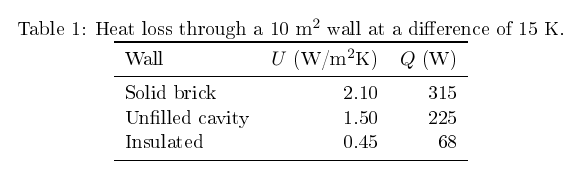
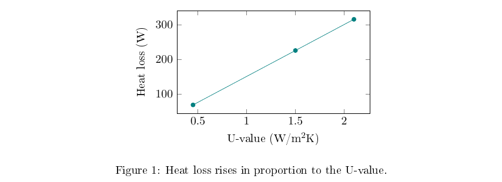

Tables
A tabular builds the grid, and a table around it adds a caption and lets it float to a good position. The booktabs package gives clean horizontal rules, and it's best to avoid vertical lines altogether.
\begin{table}[ht]
\centering
\caption{Heat loss through a wall.}
\label{tab:walls}
\begin{tabular}{lrr} % left, right, right
\toprule
Wall & $U$ & $Q$ \\
\midrule
Solid brick & 2.10 & 315 \\
Insulated & 0.45 & 68 \\
\bottomrule
\end{tabular}
\end{table}
Figures
\usepackage{graphicx}
\begin{figure}[ht]
\centering
\includegraphics[width=0.8\linewidth]{figures/map.pdf}
\caption{Heat loss across the study area.}
\label{fig:map}
\end{figure}Use PDF or SVG-derived vector files for plots, as they stay sharp at any size. Use PNG for images at 300 dpi or more for print.
Plots drawn from data
pgfplots draws a chart directly in LaTeX, so its fonts match the document.
\begin{tikzpicture}
\begin{axis}[xlabel={U-value}, ylabel={Heat loss (W)}]
\addplot coordinates {(0.45,68) (1.5,225) (2.1,315)};
\end{axis}
\end{tikzpicture}
For anything complex, generate the figure with a script, such as Python with Matplotlib, and include the file. Then the figure can be rebuilt from its data.
Introducing them properly
Every table and figure should be mentioned in the text before it appears, and each needs a caption that says what it shows. Put the \label after the \caption, or the reference will point to the section number instead. Floats move: [ht] asks for here or the top of a page, which is why you should refer to "Table 1" and not "the table below".
Text © Ahmad Ammar, licensed under CC BY 4.0. Example code © Ulster University, MIT licence. Written during a PhD supported by a Vice-Chancellor's Research Scholarship (VCRS) from Ulster University.